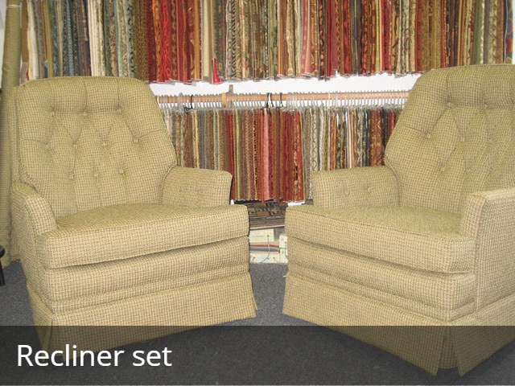

Our story
A family workshop since 1985.
Lim's Upholstery has been restoring furniture for the Portland area since 1985. Owner Andrew Lim leads a team whose craftspeople bring more than 80 years of combined experience to the bench.
We treat every project as a unique piece of functional art — restoring comfort, style, and history with factory-level precision. Whether it's a family heirloom or a well-loved everyday chair, we handle it like it's our own.
From our Beaverton shop we serve Portland, Aloha, Tigard, Hillsboro, Lake Oswego, Sherwood, and Tualatin — with pickup and delivery to make it easy.
1985
Family-owned since
80+ yrs
Combined experience
4.9★
Rated on Angi